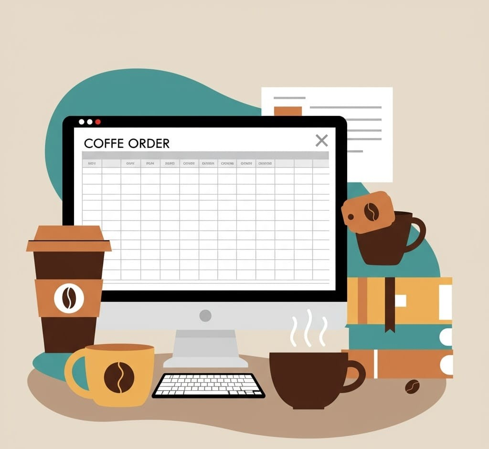
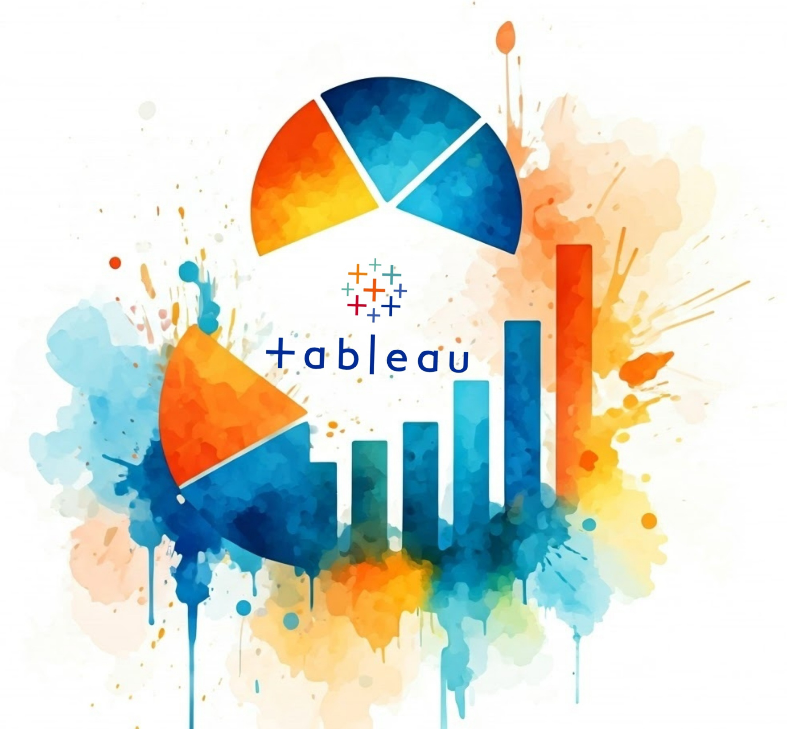

Designed and implemented a full data analysis pipeline from data collection to dashboarding.
Cleaned and explored datasets using Python and SQL, applied data transformations, and built a
dynamic dashboard to present insights. Demonstrated cross-functional skills across multiple
tools, including Python, SQL, and BI software, to solve real-world problems with a data-driven
approach.
Data Analysis with Recipes

Analysed a dataset of over 20,000 recipes to uncover patterns in ingredient usage and cuisine
diversity. Used Pandas, Matplotlib, Seaborn and other libraries to clean data, and visualise
trends. Created histograms and bar charts to extract and present insights effectively.

Cleaned and standardised a real-world layoffs dataset using SQL, focusing on removing duplicates,
handling null values, and ensuring consistent formatting. Created a staging table to preserve
the raw data while applying transformations. Used CTEs, JOINs, and string/date functions to
prepare the data for analysis. Demonstrated strong understanding of SQL for data wrangling and
integrity maintenance.
Exploratory Data Analysis in SQL

Conducted exploratory analysis on a relational database using SQL, focusing on joins,
aggregations, and filtering to extract meaningful insights. Wrote queries to analyse trends,
relationships, and performance metrics across multiple tables. Demonstrated strong command of
SQL for data exploration and insight generation.

Used Excel to analyse and visualise trends in a structured dataset, applying functions, pivot
tables, and conditional formatting for efficient data exploration. Created dynamic charts to
highlight key insights and patterns. Demonstrated proficiency in Excel-based reporting and
data-driven decision-making.

Developed an Excel dashboard to analyse coffee orders, including a thorough data cleaning process
and creation of new columns by integrating data from multiple sheets. Utilised pivot tables and charts
to summarise sales trends and customer preferences. Showcased advanced Excel techniques to transform raw data
into actionable insights.
Sales Dashboard in Tableau

Created an interactive Tableau dashboard to analyse Airbnb listings from 2016, focusing on
pricing, availability, and location-based trends. Used filters, maps, and charts to help users
explore average prices, room types, and neighborhoods. Demonstrated skills in data
visualisation, storytelling, and building intuitive dashboards for insight-driven exploration.
Data Dashboard in Power BI

Built an interactive Power BI dashboard to analyse global survey responses from data
professionals. Visualised trends in job roles, salaries, programming languages used, and
satisfaction levels across different regions. Used DAX, slicers, and dynamic visuals to enable
deep exploration of the dataset. Showcased proficiency in business intelligence, data
storytelling, and user-focused dashboard design.